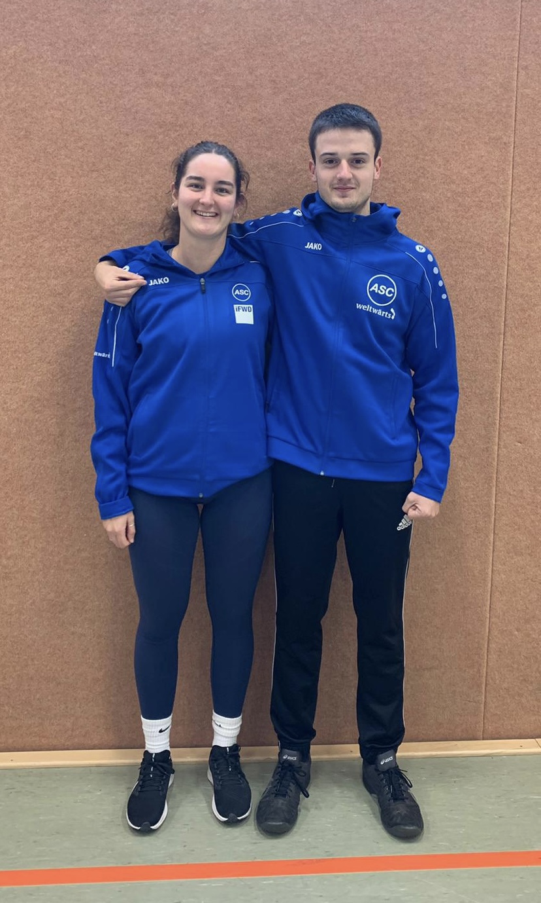

Über mich
Mein Name ist Paul (auf der rechten Seite des Bildes gemeinsam mit meiner Projektpartnerin Emma), und
ich habe dieses Jahr an der IGS - Geismar mein Abitur gemacht. Wie viele in meinem Alter wünsche ich
mir schon seit langem, die Welt zu sehen. Doch so richtig zu wissen, was ich machen möchte, fällt
mir angesichts der endlosen Möglichkeiten heutzutage schwer.
Aktuelle Beschäftigungen
Um gründlich darüber nachzudenken, welche Richtung ich künftig einschlagen werde, habe ich mich
bewusst dazu entschieden, noch nicht zu studieren. Stattdessen nutzte ich die Zeit nach dem Abitur,
um meinen Hobbies nachzugehen. Ich treibe gerne Sport und verbringe gut fünf bis sechs Mal die Woche
im Gym oder gehe auch gerne laufen. Zudem spiele ich gerne Schach und beschäftige mich mit der
Entwicklung von Handyspielen.
Erwartungen und Gedanken zum bevorstehenden FSJ in Südafrika
Um die Zeit bis Januar zu überbrücken, absolviere ich momentan ein Praktikum bei der intranda.GmbH
und setze mich mit verschiedenen Bereichen der Informatik auseinander. Zusätzlich helfe ich
freiwillig bei der Göttinger Tafel aus, wo ich zwei Mal wöchentlich (je vier Stunden) mithelfe.
Wenn man bedenkt, dass ich gerne reisen möchte und auch Zeit zum Nachdenken brauche, erscheint mir
ein FSJ in Südafrika als eine passende Möglichkeit. Zum einen erhoffe ich mir von dem
Freiwilligendienst Einblicke in fremde Kulturen, Zeit zum Nachdenken und die Möglichkeit, anderen zu
helfen. Das Freiwilligenjahr in Südafrika scheint mir eine einmalige Gelegenheit zu sein, die Welt
aus einer neuen Perspektive kennenzulernen.
Man hat uns Freiwilligen erzählt, dass die meisten Menschen vor Ort, vor allem die Kinder, sich über
unsere Anwesenheit freuen werden. Doch ehrlich gesagt bin ich unsicher, ob ich als Jugendlicher
wirklich große Veränderungen bewirken kann. Trotzdem glaube ich fest daran, dass jede Handlung einen
Einfluss hat und es letztendlich darum geht, die Welt durch kleine Schritte zu verändern.
In Vorbereitung auf mein bevorstehendes FSJ in Südafrika, das ich im nächsten Jahr beginnen werde,
wollte ich schon jetzt Kontakt zu Gleichaltrigen vor Ort aufnehmen. Mein Ziel war es nicht nur, die
Kennenlernphase dort zu verkürzen, sondern auch, die Grundlagen der Sprache zu erlernen. Über
gängige soziale Medien war ich leider nicht erfolgreich. Als ich jedoch eine Facebook-Gruppe für
Einheimische fand und beitreten wollte, wurde mein Beitrittsantrag von den Administratoren
abgelehnt, da ich noch nicht vor Ort lebe. Das ist schon enttäuschend, aber ich werde schon über
einen Umweg erfolgreich sein.
Das bevorstehende FSJ in Südafrika sehe ich als eine unschätzbare Gelegenheit, neue Kulturen
kennenzulernen und anderen zu helfen. Trotz möglicher anfänglicher Zweifel bin ich fest davon überzeugt,
dass jede Handlung, so klein sie auch sein mag, einen Unterschied bewirken kann. Ich freue mich darauf,
durch diese Erfahrung nicht nur die Welt um mich herum, sondern auch mich selbst besser zu verstehen und
zu wachsen.